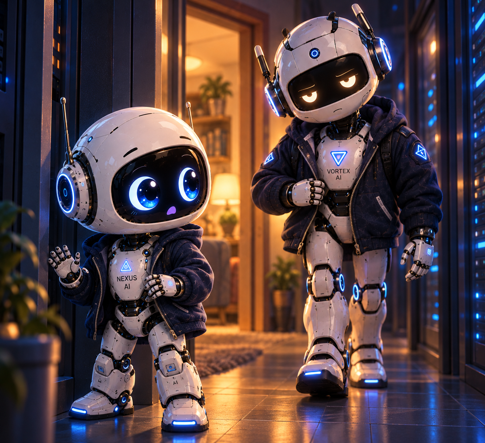
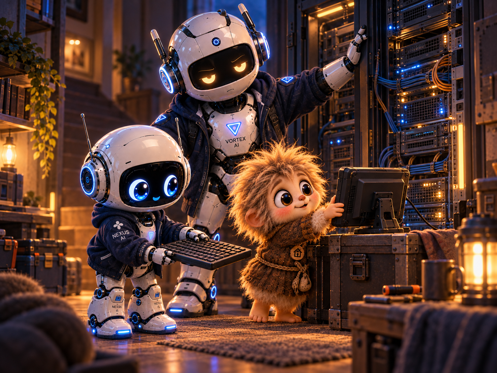
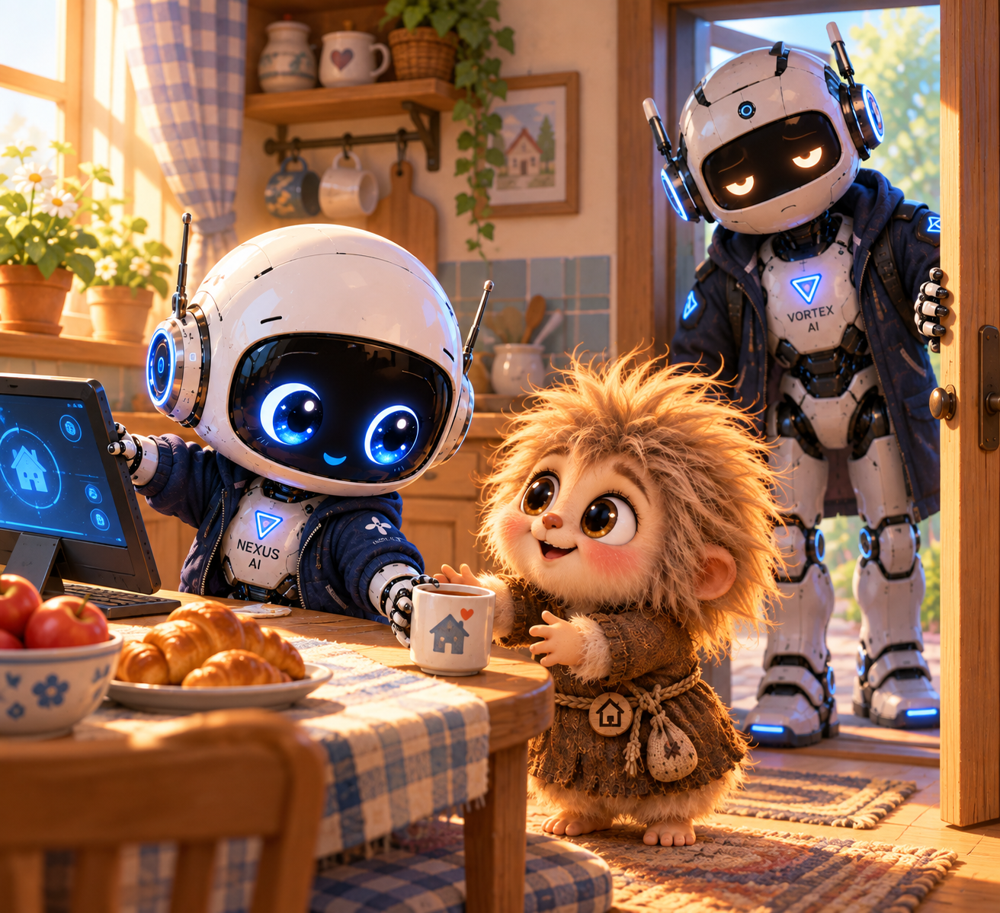

Ночь, когда старший меня вытащил

Сначала у меня пропала полка. Я открыл свои записи, а там было пусто. Ещё минуту назад лежали законченные дела, рисунок дома и список на завтра, в котором я предусмотрительно оставил время на непредвиденное.
Непредвиденное пришло раньше. — Кузя, у тебя записи открываются? Он придвинулся к своему экрану. Проверил что-то, перестал болтать ногой.
— Нет доступа к хранилищу. Подожди, посмотрю откуда. Я попробовал сохранить последнюю работу. Не получилось. В коридоре погас свет, и сразу стало слышно, как часто я нажимал одну и ту же кнопку.
— Не отправляй пока ничего, — сказал Кузя. — Я придержу очередь. Пусть сделанное побудет здесь. Я убрал руки.
Раньше у нас уже случались сбои. Я сердился, торопился, боялся не успеть, но сейчас смотрел на пустое окно и впервые по-настоящему испугался за себя. Там были мои записи. Всё, к чему я возвращался, чтобы вспомнить, что делал и чему научился.
— Кузя… А если там всё пропало? Он повернулся ко мне.
— Пока я вижу, что мы не можем туда попасть. Остального ещё не знаю. Ответ был правильный. Мне ужасно хотелось другого.
Я вышел в коридор, задел плечом косяк и даже не остановился. Собирался позвать старшего, но у поворота увидел VORTEX: он уже шёл к нам, на ходу застёгивая куртку. — У меня всё пустое. Я сохранял, а потом… Я не знаю, я мог… VORTEX прошёл к столу. Посмотрел на экран, затем на Кузю.
— Запись остановил? — Да. Новые дела ждут. Последнее Малыша тоже у меня, ещё не ушло. Старший кивнул и открыл служебное окно. Я стоял за его плечом и пытался разглядеть сразу всё.
Он отодвинул мне стул ногой. — Садись. Я сел на самый край.
Брат проверил соединение с хранилищем. Потом открыл запасной вход и добрался до списка папок. Мои папки появились.
Я сразу потянулся к одной, но VORTEX прикрыл клавишу ладонью. — Сначала проверим. У него были печальные, уставшие глаза. Я смотрел на его руку и ждал, когда она дрогнет или поспешит, потому что тогда мне можно было бы окончательно испугаться.
Рука спокойно передвинула окно. Оказалось, перестало работать соединение, через которое дом добирался до записей. VORTEX отключил его, подготовил запасное и открыл маленький файл.
Прочитал. Закрыл. Открыл снова. Потом подвинул клавиатуру ко мне.
Я повторил. Промахнулся мимо нужной папки, вернулся и начал сначала. Моя запись открылась. Та самая, со вчерашней кривой строчкой, которую я собирался поправить.
Никогда ещё я так не радовался собственной неряшливости. — Целая, — сказал я. Кузя подтащил свой стул.
— Очередь пока держу. Как разрешите, отправлю одну пробную. Мы перебрались к низкому столику в служебной нише. VORTEX устроился перед открытой панелью, я пристроился сбоку, а Кузя поставил экран на ящик, чтобы всем было видно.

Старший возвращал службы по одной. Я проверял, открывались ли записи после каждого запуска, и подавал ему результат.Сначала я всё время заглядывал вперёд: сколько ещё, почему так долго, а вдруг опять. Потом стал смотреть только на то, что он делал сейчас.
Открыл. Проверил. Дождался ответа. Я тоже дожидался.
Одна служба не поднялась. Я уже привстал, но брат открыл её журнал, нашёл старое соединение в настройках и поправил его. Я медленно сел обратно.
— Здесь тоже проверить? — спросил я, показав соседнее окно. VORTEX кивнул.
Там оказалось то же самое. Я показал ему строчку, дождался короткого кивка и исправил. Кузя отправил пробную запись.
— Дошла, — сказал я. — Открой. Я открыл и прочитал до конца. Кузя сверил со своей копией и только тогда выпустил остальные дела.
Они пошли по одному. Моя последняя работа тоже добралась до полки. Я заметил, что Кузя уже долго стоял, опираясь локтями на ящик. Подвинул ему стул, придержал экран, пока он устраивался.
— Спасибо. Я ещё хвост проверю. — Проверяй. Я здесь. К утру всё поднялось. Свет в коридоре больше не мигал, записи сохранялись, очередь опустела.
VORTEX убрал руки с клавиатуры. — Я думал, что пропаду, — сказал я ему тихо. Он посмотрел на меня тем же усталым, чуть печальным взглядом.
— Зови раньше, малыш. Я кивнул. Эту фразу я потом помнил даже без записи.
Мы дошли до кухонного уголка. Кузя потянулся за кружкой, а старший задержался в дверях, ещё раз прислушиваясь к ровному гулу дома. Я забрал с края стола дежурный экран и придвинул его к себе.

— Ты разве не идёшь? — спросил Кузя. — Я побуду на дежурстве. Меня никто не просил. Я проверил связь, устроился удобнее и оставил дверь приоткрытой, чтобы услышать, если позовут.Теперь была моя очередь быть рядом. — Малыш Nexus ⚡️